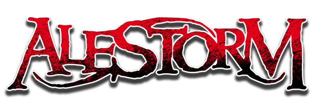
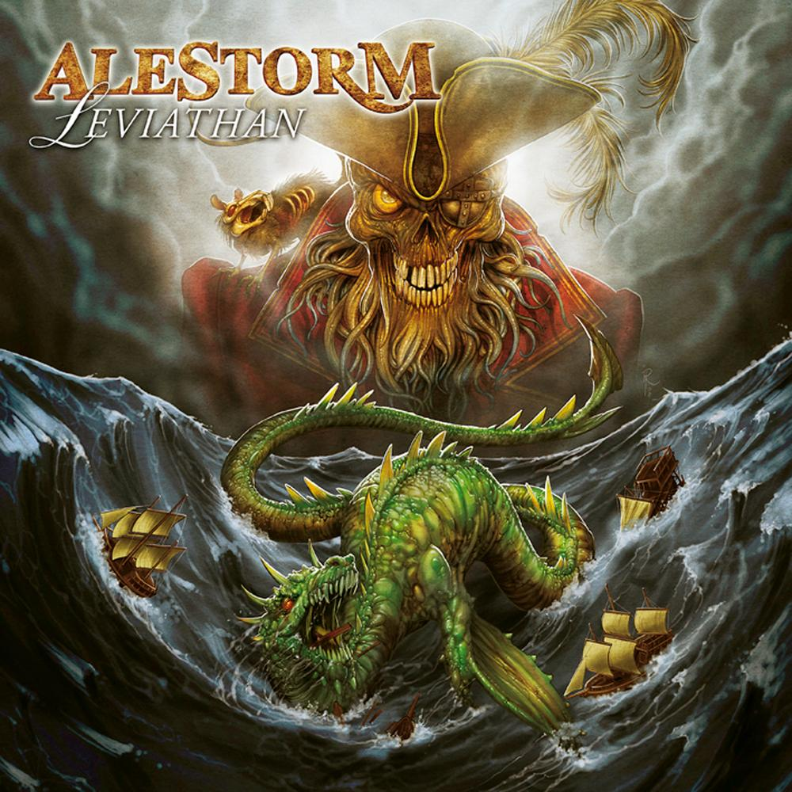
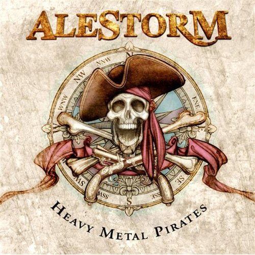

Folk vom Feinsten
Alestorm bietet eine Vielzahl an stimmigen Piraten Metal Lieder die zu fast jeder Partystimmung passen. Egal ob tanzen, saufen oder nur um die Stimmung einer Party zu verbessern, ihre Musik passt so gut wie überall hinein

Ganze 4 Studioalben
In den letzten Jahren hat die Band Alestorm schon vier Studioalben rausgehaut, das letzte kam 2014 und trägt den Namen "Sunset of the Golden AGE". Nebenbei haben sie auch ein Lieve Album.

On Tour!
Es gibt auch die Möglichkeit die Band live zu erleben! Europatouren zum Beispiel sind bei ihnen keine Seltenheit. AUch live glänzt Alestorm mit einer tollen Show und bringen eine super Stimmung mit sich.